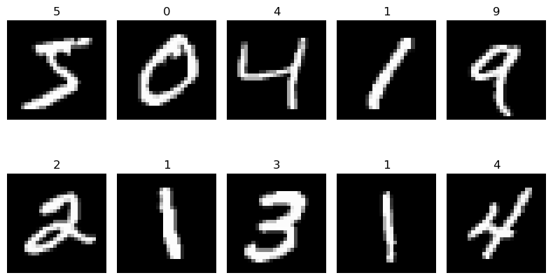
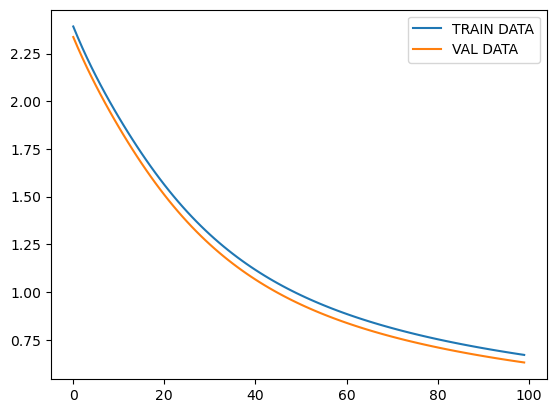
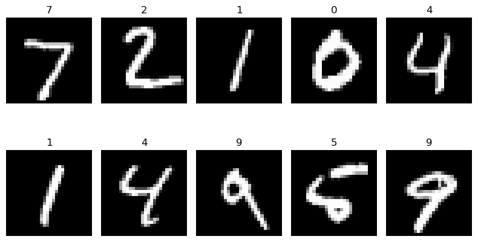

MNIST · Flatten · Softmax · Full-Batch Adam
Sequential 다중 분류
28×28 손글씨 이미지를 784개 Pixel Feature로 펼쳐 숫자 0~9의 확률을 계산한다. 확률 → Class → Accuracy를 연결하고, 원문의 모델 구조와 실제 학습 설정을 Shape·모델 상태·저장 출력으로 읽는다.
Flatten 다음에 Dense(10)만 있으므로 은닉층 없는 다중 로지스틱 회귀다. 원본 제목의 DNN·심층신경망 표현과 실제 구조를 구분한다.
학습 목표
- 다중 분류에서 정수 Label과 열 개 확률의 관계를 설명한다.
- (N,28,28) → (N,784) → (N,10) → (N,)을 추적한다.
- 전처리의 dtype·값 범위 변화와 Flatten을 구분한다.
- Full-Batch 구성과 Adam 업데이트 규칙을 분리한다.
- History·evaluate·predict·argmax의 역할을 구분한다.
- 누수·Shape·학습 상태·Metric 해석의 실수를 점검한다.
기준: 통합교안 55번 p.205~212 및 55_케라스-SequentialAPI-다중분류-로지스틱회귀20.ipynb. 코드·주석과 검토 메모를 구분한다. 학습 수치와 그림 세 장은 첨부 Notebook의 저장 결과이며 재학습 결과가 아니다.
실습 목표
이미지 하나에서 숫자 Class 하나를 고른다
이번 문제는 숫자 0~9 중 하나를 선택하는 단일 레이블 다중 분류다. 여러 숫자를 동시에 Label로 선택하거나 이미지 안의 숫자 위치를 탐지하는 문제가 아니다.
| 항목 | ML 19 | ML 20 |
|---|---|---|
| 입력 | 수치 Feature 2개 | 28×28 이미지 |
| 출력 | Sigmoid 하나, (N,1) | Softmax 열 개, (N,10) |
| 정답 | 0/1 Binary Label | 0~9 정수 Class Index |
| Loss | Binary Cross-Entropy | Sparse Categorical Cross-Entropy |
| 판정 | 확률 > 0.5 | argmax(axis=1) |
공통 학습 틀에서는 분리 후 모델을 설명할 수 있지만, 이번 원본은 모델을 만든 뒤 fit 내부에서 Validation을 분리한다. 교안의 실행 순서와 개념상 처리 단계를 함께 읽는다.
[S1] p.205~207, p.210~211. ML 19 비교와 문제 유형 해석은 Step 1·2에서 정리한 내용.
환경·원문 읽기
Cell 순서와 주석의 설명 범위를 확인한다
| Cell | 작업 |
|---|---|
| 1~4 | 문제·BGD 소개, NumPy·TensorFlow Import, MNIST 로드 |
| 5~9 | 이미지 확인, Training 시각화, dtype, 정규화 |
| 10~14 | 모델, Summary, compile, Batch 계산, fit |
| 15~20 | History, Test 평가, 확률·Shape, argmax, Accuracy |
| 21~22 | Test 시각화, 마지막 빈 Cell |
NumPy는 배열·정확도 계산, TensorFlow/Keras는 모델과 학습, Matplotlib은 세 그림에 사용한다. 이번 원본에 TensorFlow 버전 출력은 없다. Cell 번호와 In [실행 번호]를 구분하고, 저장 출력과 현재 재실행 결과가 항상 같다고 기대하지 않는다.
원본 소개·주석 확인 — Cell 1~2
원문 마크다운 · Cell 1
## CNN이 아닌 FC(완전 연결층)로 이미지 분류하기
### 심층 신경망(DNN)으로 손글씨 판별하기
### 입력층 + 출력층 모형.BGD 적용원문 주석 · Cell 2
#<<배치 경사 하강법(BGD)>>
#한번의 에포크에 전체 데이터(60000장의 이미지)를 훈련하는 경사하강법
#즉,한번의 에폭에 한번 업데이트
# 입력층 + 출력층 즉 고전 머신러닝의 로짓틱회귀와 같다(sklearn의 LogisticRegression)
# CNN으로 분류시는 99%이상의 정확도를 가진다
# <MNIST 데이타 셋>
# 0~9의 손글씨 데이타 셋
# 60,000장의 훈련 데이타 이미지와 10,000장의 테스트 데이타 이미지 포함
# 각 이미지는 28 X 28픽섹에 GRAYSCALE 1인 흑백 이미지
# 1. 각 이미지 데이타를 float32로 변환
# 2. 28 X28즉 784개의 Feature을 가진 1차원으로 벡터화
# 3. 각 픽셀이 가진 0~255의 값을 0~1사이 값으로 변환
# 정규화 예
# 0 0
# 1 0.004
# 2 0.008
# .
# 255 1
별도 CSV·Graphviz·pydot·plot_model·model.save()를 사용하는 단원이 아니다. 원본 그림은 Training 이미지, Loss 곡선, Test 이미지다.
[S1] p.205 원문·개요, p.206~212 전체 Cell. [S2] 코드·실행 기록.
Dataset·X / y
MNIST 이미지와 정답 배열을 준비한다
교안 원문 · Cell 3
import numpy as np
import tensorflow as tf교안 원문 · Cell 4
#넘파이 배열
(X_train,y_train),(X_test,y_test)=tf.keras.datasets.mnist.load_data()
#(60000, 28, 28), (60000,), (10000, 28, 28), (10000,)- 무엇을 하는가?
- Training·Test 입력과 정답 네 배열을 불러온다.
- 왜 필요한가?
- 이미지 분류를 위한 데이터와 Label의 대응을 준비한다.
- 입력 Shape
- 기존 배열을 전달하는 단계가 아니다.
- 출력·반환값
- X_train (60000,28,28), y_train (60000,), X_test (10000,28,28), y_test (10000,).
- 실행 후 변화
- NumPy 배열 변수가 생성된다. 모델은 아직 없다.
이미지는 28×28 Grayscale이고 Pixel은 0~255, 정답은 0~9의 정수다. 예를 들어 정답 7은 크기를 예측하는 회귀값이 아니라 Class 7의 Index다.
X: 이미지
X_train[0]은 (28,28)의 Pixel 배열이다. 28×28=784개의 수치가 한 이미지에 들어 있다.
y: 정답
y_train[0]은 정수 Label 하나다. 이번 원본은 정답을 One-Hot으로 바꾸지 않는다.
Loader는 로컬 캐시를 사용한다. 캐시에 데이터가 없을 때의 다운로드·접근 문제와 모델 코드의 오류를 구분한다.
[S1] p.205, Cell 3~4. Dataset·캐시 설명은 Step 1·2 보완, [D1].
데이터 확인
처음 열 개의 이미지와 실제 정답
교안 원문 · Cell 5
X_train[0]Cell 5에는 저장 출력이 없다. Pixel 배열의 실행값을 임의로 채우지 않는다.
교안 원문 · Cell 6
#학습 데이타 시각화
import matplotlib.pyplot as plt
fig,axes = plt.subplots(2,5)
fig.set_size_inches(8,5)
for index in range(10):
ax = axes[index//5,index % 5]
ax.imshow(X_train[index],cmap='gray')
ax.axis('off')
ax.set_title(str(y_train[index]))
plt.tight_layout()
plt.show()
- 무엇을 하는가?
- Training 이미지 처음 열 개를 실제 Label과 함께 표시한다.
- 왜 필요한가?
- Pixel의 시각적 형태와 정답 대응을 확인한다.
- 입력 Shape
- 각 X_train[index]는 (28,28).
- 출력·반환값
- 2행 5열 Axes를 가진 Figure.
- 실행 후 변화
- 그림만 표시하며 데이터·모델을 학습시키지 않는다.
index//5는 행, index%5는 열이다.
Index 7은 0부터 센 행 1·열 2다.
제목은 y_train[index]이며 Prediction이 아니다.
처음 열 개이지 숫자 0~9를 하나씩 고른 구성이 아니다.
교안 원문 · Cell 7
X_train.dtype저장 출력
dtype('uint8')dtype 조회는 자료형을 확인할 뿐 변환하지 않는다.
[S1] p.205~206, Cell 5~7. 그림 원본: [S2].
전처리
값의 범위와 dtype을 바꾸고 Shape는 유지한다
교안 원문 · Cell 8
#데이타 전처리
#1.uint8을 float32로 변환 그리고 각 픽셀이 가진 0~255의 값을 0~1사이 값(정규화)으로 변환
X_train = X_train.astype(np.float32)/255.
X_test = X_test.astype(np.float32)/255.
#(28,28)->(784,)로 reshape하지 않음- 무엇을 하는가?
- X를 float32로 변환한 뒤 255로 나눈다.
- 왜 필요한가?
- Pixel을 0~1 범위의 실수로 표현한다.
- 입력 Shape
- (60000,28,28), (10000,28,28).
- 출력·반환값
- 이미지 Shape는 그대로이며 값·dtype만 변한다.
- 실행 후 변화
- X_train·X_test에 변환 결과를 재대입한다. y는 바꾸지 않는다.
| Pixel | 변환값 | Pixel | 변환값 |
|---|---|---|---|
| 0 | 0.0 | 1 | 약 0.00392 |
| 128 | 약 0.50196 | 255 | 1.0 |
이미지 크기 변경·증강·평균 0과 표준편차 1의 표준화·One-Hot은 수행하지 않는다. Flatten은 이 셀이 아니라 모델 안에서 일어난다.
교안 원문 · Cell 9
X_train[0]Cell 9도 저장 출력이 없다. [S1] p.206, Cell 8~9. 반복 실행과 범위 해석은 Step 1·2 보완.
Shape 흐름
이미지·Feature·확률·Class의 축을 구분한다
(B,28,28)(B,784)(B,10)(B,)(B,) bool| 범위 | X | y |
|---|---|---|
| 전체 Training 배열 | (60000,28,28) | (60000,) |
| fit 내부 Weight 학습 부분 | (48000,28,28) | (48000,) |
| fit 내부 Validation 부분 | (12000,28,28) | (12000,) |
| Test | (10000,28,28) | (10000,) |
| 단일 예측 입력 | (1,28,28) | 비교할 때 Label 하나 |
B는 Batch의 Sample 수다.
Grayscale이라는 의미와 Channel 축을 명시했는지는 다르다.
이번 입력은 (N,28,28)이며
원문에 없는 (N,28,28,1)로 바꾸어 설명하지 않는다.
[S1] p.205~207, p.211. 내부 분리 개수·단일 예측 Shape는 Step 1·2 보완, [D5], [D7].
Model Architecture
실제 모델에는 은닉층이 없다
교안 원문 · Cell 10
#입력층 + 출력층
model = tf.keras.models.Sequential([
#관측치 하나(이미지 한장)를 기준으로 입력층에 입력하는 데이타의 shape지정
tf.keras.layers.Input((28,28)),
tf.keras.layers.Flatten(),#(None,28,28)=>(None, 784)
tf.keras.layers.Dense(10,activation='softmax')
]
)- 무엇을 하는가?
- 이미지 입력, Flatten, Dense 출력층을 순서대로 연결한다.
- 왜 필요한가?
- 784개 Pixel 값에서 열 개 숫자의 확률을 계산한다.
- 입력 Shape
- Sample 기준 (28,28), Batch 기준 (B,28,28).
- 출력·반환값
- 확률 배열의 구조 (B,10).
- 실행 후 변화
- 모델 구조와 Dense의 초기 Parameter가 준비된다. 정답을 이용한 학습은 아직 아니다.
Flatten 다음에 Dense(10)만 있으므로 은닉층 없는 다중 로지스틱 회귀다. 원문 제목의 ‘DNN·심층신경망’과 구조를 구분한다.
Flatten은 Parameter가 없는 Shape 변환이다. 28×28의 값 784개를 버리지 않고 펼친다. Pixel의 위치에 대응하는 Vector Index는 남지만, CNN처럼 작은 필터를 이동시키며 이웃 Pixel을 처리하는 구조는 아니다.
[S1] p.205 공식 메모, p.206 Cell 10. Flatten·Dense 해석은 Step 1·2 보완, [D2], [D3].
Summary·Parameter
784×10+10 = 7,850개
교안 원문 · Cell 11
model.summary()| Layer | Output Shape | Parameter |
|---|---|---|
| flatten (Flatten) | (None,784) | 0 |
| dense (Dense) | (None,10) | 7,850 |
저장 출력 요약
Model: "sequential"
Total params: 7,850
Trainable params: 7,850
Non-trainable params: 0(B,784) @ W(784,10) + b(10,) → Z(B,10)
Weight는 7,840개, Bias는 열 개다. None은 고정되지 않은 Batch 크기다. Summary는 구조를 조회하는 코드이지 새로 학습하거나 정확도를 측정하는 코드가 아니다.
- 무엇을 하는가?
- 모델의 Layer·출력 Shape·Parameter 수를 표시한다.
- 왜 필요한가?
- 원하는 입력과 출력이 연결되었는지 확인한다.
- 입력 Shape
- Dataset 입력 없이 model을 조회한다.
- 출력·반환값
- Summary 표; Prediction 배열이 아니다.
- 실행 후 변화
- 가중치를 업데이트하지 않는다.
[S1] p.206~207, Cell 11. 행렬식과 Parameter 계산은 모델 구성을 풀어 쓴 보완 설명.
핵심 개념·수식
Softmax 확률과 정수 Label의 Cross-Entropy
Step 1·2의 수식·계산 보완
Z = XflatW + b
pk =
exp(zk) / ∑j=0…9 exp(zj)
Dense의 점수 z와 Softmax 확률 p를 구분한다.
각 Sample의 확률은 [p0,p1,…,p9]이고
합은 수치 오차를 제외하면 1이다.
출력 열 개는 Class 0~9의 확률을 뜻한다.
정수 Label
정답 7 → Sparse Categorical Cross-Entropy. 이번 원본의 방식이다.
One-Hot Label
[0,0,0,0,0,0,0,1,0,0] → Categorical Cross-Entropy. 원본이 수행한 전처리는 아니다.
정답 Class가 c일 때 L = −log(pc)
평균 손실 = −(1/B)∑i log(pi,yᵢ)
| 정답 확률 | 0.9 | 0.6 | 0.1 |
|---|---|---|---|
| −log(p) | 약 0.1054 | 약 0.5108 | 약 2.3026 |
Sparse는 이미지에 0이 많다는 뜻으로 읽지 않는다.
정수 Label 표현에 맞는 Loss라는 의미다.
원문의 Softmax 출력과 from_logits=True를
임의로 혼합하지 않는다.
원문 설정 [S1] p.207. 수식·해석은 Step 1·2 보완, [D4], [D5], [D8].
compile
Adam 0.001 · Sparse Loss · acc
교안 원문 · Cell 12
#binary_crossentropy: 이진분류인 경우
#categorical_crossentropy: 다중분류인 경우 단,정답 레이블이 one-hot encoding 되어 있는 경우
#sparse_categorical_crossentropy: 다중분류인 경우 단,정답 레이블이 정수인덱스
optimizer = tf.keras.optimizers.Adam(learning_rate=0.001)
model.compile(optimizer=optimizer,loss='sparse_categorical_crossentropy',metrics=['acc'])- 무엇을 하는가?
- Optimizer, Loss, Metric을 설정한다.
- 왜 필요한가?
- 업데이트 규칙·학습 목적·평가 기준을 지정한다.
- 입력 Shape
- Dataset을 전달하는 단계가 아니다.
- 출력·반환값
- Adam 객체와 학습 설정; 예측 배열은 반환하지 않는다.
- 실행 후 변화
- 학습 준비만 한다. W,b의 정답 기반 업데이트는 fit에서 한다.
Adam은 Gradient의 1차·2차 모멘트 추정치를 이용하는 Optimizer다. 실제 학습률은 0.001이다. Batch Size는 업데이트 전에 처리할 Sample 수이므로 Adam과 Full-Batch는 서로 다른 설정이다.
[S1] p.207, Cell 12. API 해석은 Step 1·2 보완, [D5]~[D8].
Batch 크기
48,000은 계산값이고, 분리는 fit에서 한다
교안 원문 · Cell 13
int(X_train.shape[0]*0.8)저장 출력
48000- 무엇을 하는가?
- Training 배열 첫 축의 80%를 정수로 계산한다.
- 왜 필요한가?
- 검증을 제외한 학습 부분과 같은 Batch 크기를 확인한다.
- 입력 Shape
- X_train.shape[0]은 스칼라 60000.
- 출력·반환값
- 정수 48000.
- 실행 후 변화
- 숫자만 계산한다. 이 셀만으로 데이터 분리·학습은 하지 않는다.
60,000 × 0.8 = 48,000
다음 fit은 같은 계산식을 batch_size에 사용한다. 전체 Training 변수의 개수 60,000과 실제 Weight 학습 개수 48,000을 혼동하지 않는다.
[S1] p.207, Cell 13~14.
fit·Train / Validation / Test
Full-Batch Adam으로 100회 업데이트한다
교안 원문 · Cell 14
#32장의 이미지 학습후 파라미터(W,b) 업데이트
#batch_size=32 기본값
#BGD 적용 - batch_size(Integer)를 전체 학습 데이타 크기로 지정
model.fit(X_train,y_train,epochs=100,batch_size=int(X_train.shape[0]*0.8),validation_split=0.2)- 무엇을 하는가?
- 20%를 Validation으로 분리하고 나머지로 모델을 학습한다.
- 왜 필요한가?
- Class 확률을 정답에 맞추며 검증 기록도 관찰한다.
- 입력 Shape
- X (60000,28,28), y (60000,).
- 출력·반환값
- History 객체. 원문은 별도 history 변수에 대입하지 않는다.
- 실행 후 변화
- W,b와 Adam의 학습 상태가 업데이트되고 Epoch별 기록이 생성된다.
원문 설정에 대한 분리·Step 계산
Weight 학습
48,000개
원본 배열 앞의 80%
X_train[:48000]
Validation
12,000개
원본 배열 뒤의 20%
X_train[48000:]
Test
10,000개
Loader가 제공한 별도 Test
X_test
위 슬라이싱은 내부 사용 범위를 설명한 것이며 원문에 별도 변수로 작성된 코드는 아니다. NumPy Validation은 셔플 전 마지막 부분에서 분리되어 해당 fit 중 고정된다. 원본에 계층화 분할은 없으므로 Class별 개수가 동일하다고 가정하지 않는다.
48,000 / 48,000 = 1 Step / Epoch
100 Epoch × 1 Step = 100번의 Optimizer 업데이트
| Batch Size | Step/Epoch | 100 Epoch의 Step |
|---|---|---|
| 원본 48,000 | 1 | 100 |
| 비교용 32 | 1,500 | 150,000 |
[S1] p.207~208, Cell 14. Validation·Batch 동작은 Step 1·2 보완, [D7], [D12].
저장 학습 로그
Loss와 acc의 변화를 함께 읽는다
| Epoch | Train acc | Train Loss | Val acc | Val Loss |
|---|---|---|---|---|
| 1 | 0.0923 | 2.3922 | 0.1053 | 2.3369 |
| 10 | 0.3954 | 1.9563 | 0.4430 | 1.9055 |
| 20 | 0.6163 | 1.5934 | 0.6516 | 1.5405 |
| 50 | 0.7816 | 0.9944 | 0.8083 | 0.9454 |
| 75 | 0.8232 | 0.7858 | 0.8432 | 0.7417 |
| 100 | 0.8476 | 0.6703 | 0.8635 | 0.6306 |
두 데이터에서 Loss가 감소하고 acc가 높아졌다. 마지막 Training 로그는 약 84.76%, Validation은 약 86.35%다. 이는 원본 조건에서 저장된 학습 결과다.
[S1] p.208~210, [S2] Cell 14의 저장 로그. 새 학습 결과가 아니다.
History·Loss 곡선
model.history.history로 기록을 읽는다
교안 원문 · Cell 15
##훈련 데이타와 검증용 데이타 그래프 시각화로 과적합 판단
import matplotlib.pyplot as plt
plt.plot(model.history.history['loss'],label='TRAIN DATA')
plt.plot(model.history.history['val_loss'],label='VAL DATA')
#plt.xlim(0,100)
plt.legend()
plt.show()
- 무엇을 하는가?
- Training과 Validation의 손실 기록을 표시한다.
- 왜 필요한가?
- 학습이 진행되는 동안 두 오차가 어떻게 변했는지 비교한다.
- 입력 Shape
- 각 길이 100인 Loss 기록 두 개.
- 출력·반환값
- 두 곡선을 가진 Figure.
- 실행 후 변화
- 그림만 표시하며 W,b는 바뀌지 않는다.
| 표현 | 의미 |
|---|---|
| model.history | 모델에 연결된 History 객체 |
| model.history.history | 그 객체 안의 기록 딕셔너리 |
| ['loss'] / ['val_loss'] | Training / Validation Loss 목록 |
별도 history 변수가 없어도 원본은 위 방식으로 기록을 읽는다. 설정·로그상 기록은 loss, acc, val_loss, val_acc이며, Key 목록 자체를 출력한 원본은 아니다. History는 모든 Epoch의 가중치를 저장한 파일도 아니다.
#plt.xlim(0,100)은 주석이다.
x값을 따로 주지 않아 인덱스 0~99가 실제 Epoch 1~100에 대응한다.
원본은 Accuracy 곡선을 별도로 그리지 않았다.
[S1] p.210, Cell 15; 그림 [S2]. 계산 시점 설명은 Step 1·2 보완, [D12].
evaluate
Test 10,000개의 Loss와 Accuracy
교안 원문 · Cell 16
#평가하기
_,accuracy=model.evaluate(X_test,y_test)#손실값,평가지표(컴파일시 설정한) 반환
f'정확도:{accuracy*100}%'저장 결과 — 진행 막대·소요 시간 생략
313/313 - acc: 0.8617 - loss: 0.6360
'정확도:86.16999983787537%'- 무엇을 하는가?
- Test 이미지·정답으로 현재 모델의 성능을 평가한다.
- 왜 필요한가?
- Weight 학습에 사용하지 않은 데이터의 손실·판정을 확인한다.
- 입력 Shape
- X_test (10000,28,28), y_test (10000,).
- 출력·반환값
- Loss와 Accuracy 두 스칼라. 첫 값은 _, 둘째는 accuracy에 대입한다.
- 실행 후 변화
- 평가값만 계산하며 학습용 W,b는 업데이트하지 않는다.
저장 Test Loss
약 0.6360
원문에 전체 정밀도의 Loss 출력은 없다.
저장 Test Accuracy
약 86.17%
Test 10,000개의 Class 일치 비율이다.
_는 Loss를 계산하지 않는 설정이 아니라
반환값을 받는 변수 이름이다.
마지막 f-string은 Notebook 표현식이며,
일반 .py 실행에서 화면 표시를 원하면
print로 감싸는 보완 변경이 필요하다.
ceil(10,000/32) = 313 Batch
312×32 + 16 = 10,000
[S1] p.210, Cell 16. 기본 Batch·반환값 설명은 Step 1·2 보완, [D7].
predict
이미지마다 열 개 확률을 반환한다
교안 원문 · Cell 17
#예측값
y_pred=model.predict(X_test)교안 원문 · Cell 18
#10000장 테스트 이미지의 각각에 대한 0부터 ~9일 확률
y_pred,y_pred.shape,type(y_pred)원본 저장 출력
(array([[7.1435780e-03, 1.5302168e-03, 3.8644308e-03, ..., 9.2472064e-01,
4.5565958e-03, 3.3513181e-02],
[1.7107708e-02, 1.8729907e-02, 6.2827623e-01, ..., 4.7697054e-04,
3.8159829e-02, 2.1015876e-03],
[2.2380648e-02, 6.7225993e-01, 6.3748159e-02, ..., 4.5010697e-02,
5.7817426e-02, 2.0973666e-02],
...,
[5.7056551e-03, 7.6638549e-03, 6.9937319e-03, ..., 7.3014341e-02,
9.3221456e-02, 2.9864740e-01],
[7.1126036e-02, 4.8291914e-02, 2.5093352e-02, ..., 2.9570254e-02,
2.9039660e-01, 2.5368681e-02],
[1.7473340e-02, 1.1565688e-04, 2.3191979e-02, ..., 7.6084296e-05,
4.2396630e-04, 4.2379470e-04]], shape=(10000, 10), dtype=float32),
(10000, 10),
numpy.ndarray)- 무엇을 하는가?
- Test 전체에 대한 Class별 확률과 배열 정보를 확인한다.
- 왜 필요한가?
- 확률 배열의 의미·Shape·자료형을 판정 전에 확인한다.
- 입력 Shape
- (10000,28,28).
- 출력·반환값
- (10000,10)의 float32 NumPy 배열.
- 실행 후 변화
- y_pred가 만들어지며 W,b는 바뀌지 않는다.
한 행은 한 이미지의 [p0,p1,…,p9]다.
출력의 ...는 중간 값을 화면에서 생략했다는 뜻이며,
누락된 확률을 임의로 채우지 않는다.
Prediction도 원문에는 313/313으로 기록되어 있다.
| Sample | Class | 해당 확률 |
|---|---|---|
| 1 | 7 | 약 0.92472064 |
| 2 | 2 | 약 0.62827623 |
| 3 | 1 | 약 0.67225993 |
[S1] p.210~211, Cell 17~19. 확률 출력의 생략 기호는 원본 표시다.
Class 판정
argmax(axis=1)은 최대 확률의 Index를 고른다
교안 원문 · Cell 19
np.argmax(y_pred,axis=1)저장 출력
array([7, 2, 1, ..., 4, 5, 6], shape=(10000,))- 무엇을 하는가?
- 이미지마다 가장 큰 확률의 열 Index를 선택한다.
- 왜 필요한가?
- 열 개 확률을 숫자 Class 하나로 바꾼다.
- 입력 Shape
- y_pred (10000,10).
- 출력·반환값
- 정수 Class 배열 (10000,).
- 실행 후 변화
- 새 배열을 반환한다. 원문은 재대입하지 않아 y_pred는 확률로 남는다.
| 지정 | 선택 방향 | 결과 의미 |
|---|---|---|
| axis=1 | 각 이미지의 Class 확률 열 | Sample마다 숫자 하나 |
| axis=0 | 각 Class의 Sample 행 | Class마다 최대값이 나온 Sample Index |
| 축 생략 | 배열 전체를 펼친 기준 | 전체 최대값의 평탄화 Index |
[S1] p.211, Cell 19. 축·최대값 해석은 Step 1·2 보완, [D9].
Metric 재계산
Class → Boolean → 정답 개수 → Accuracy
교안 원문 · Cell 20
#정확도
f'정확도:{np.sum(np.equal(np.argmax(y_pred,axis=1),y_test))/len(y_test) * 100}%'저장 출력
'정확도:86.17%'(10000,)(10000,) bool정답 수- 무엇을 하는가?
- 예측 Class와 y_test를 비교해 정확도를 직접 계산한다.
- 왜 필요한가?
- Keras Metric을 배열 연산으로 해석한다.
- 입력 Shape
- 확률 (10000,10), 실제 정답 (10000,).
- 출력·반환값
- Boolean·정답 수·비율을 거쳐 최종 문자열.
- 실행 후 변화
- 계산 결과만 만들며 모델과 기존 확률은 수정하지 않는다.
정답 8,617개 / 10,000개 = 86.17%
오답 1,383개 · 오분류율 13.83%
정답·오답 개수는 저장 Accuracy에서 도출한 보완 계산이다. 원본에서 오분류 이미지를 모두 추출한 결과는 아니다. Keras의 86.16999983787537%와 86.17%는 표시 정밀도의 차이다.
[S1] p.210~211, Cell 16·20. 개수·오분류율 계산은 Step 1·2 보완.
Test 시각화
그림의 제목은 실제 정답이다
교안 원문 · Cell 21
#테스트 데이타 시각화
import matplotlib.pyplot as plt
fig,axes = plt.subplots(2,5)
fig.set_size_inches(8,5)
for index in range(10):
ax = axes[index//5,index % 5]
ax.imshow((X_test[index]).reshape((28,28)),cmap='gray')
ax.axis('off')
ax.set_title(str(y_test[index]))
plt.tight_layout()
plt.show()
- 무엇을 하는가?
- Test 이미지 처음 열 개와 정답을 표시한다.
- 왜 필요한가?
- 평가 대상의 형태를 시각적으로 확인한다.
- 입력 Shape
- X_test[index]는 이미 (28,28).
- 출력·반환값
- 2행 5열의 Figure.
- 실행 후 변화
- 시각화만 한다. 예측·학습을 새로 수행하지 않는다.
[S1] p.211~212, Cell 21~22. Cell 22는 빈 셀이다. 그림 [S2].
보완 코드
한 장 예측에서도 Batch 축을 유지한다
Step 1·2 보완 예시 · 원본 학습 후 별도 실행
# 보완 예시: 이미 정규화된 Test 이미지 한 장을 사용한다.
single_x = X_test[:1]
if single_x.shape != (1, 28, 28):
raise ValueError(f"입력 Shape를 확인하세요: {single_x.shape}")
if not np.isfinite(single_x).all():
raise ValueError("입력에 NaN 또는 Inf가 있습니다.")
single_prob = model.predict(single_x, verbose=0)
if single_prob.shape != (1, 10):
raise ValueError(f"출력 Shape를 확인하세요: {single_prob.shape}")
if not np.isfinite(single_prob).all():
raise ValueError("예측값에 NaN 또는 Inf가 있습니다.")
predicted_class = int(np.argmax(single_prob, axis=1)[0])
predicted_probability = float(single_prob[0, predicted_class])
print("예측 숫자:", predicted_class)
print("선택한 Class의 확률:", predicted_probability)
print("실제 정답:", int(y_test[0]))- 무엇을 하는가?
- Test 한 장의 확률과 Class를 계산한다.
- 왜 필요한가?
- 단일 입력의 Batch 축과 Class 선택을 확인한다.
- 입력 Shape
- X_test[:1]은 (1,28,28).
- 출력·반환값
- 확률 (1,10), Class 배열 (1,), 추출 후 정수 하나.
- 실행 후 변화
- 예측만 수행하며 W,b는 업데이트하지 않는다.
다시 255로 나누지 않는다. X_test는 이미 전처리된 상태다. 이 예시는 새 외부 이미지를 수집한 것이 아니며, 출력 숫자는 실행 시점의 모델 상태에 따른다.
Step 1·2의 보완 코드. 원본 학습 코드나 저장 출력으로 표시하지 않는다.
자주 하는 실수·원문 대조
제목·주석·활성 코드·출력을 분리한다
| 구분 | 원문·실수 | 확인할 기준 |
|---|---|---|
| 공식 검토 메모 | DNN·심층신경망 제목 | 은닉층 없는 다중 로지스틱 회귀 |
| 코드 대조 보완 | BGD 설명 | Full-Batch 구성, 실제 Optimizer는 Adam |
| 코드 대조 보완 | 60,000장·32장 주석 | 실제 학습 48,000개, Batch 48,000 |
| 코드 대조 보완 | 전처리에서 벡터화한다고 해석 | 모델 내부의 Flatten이 수행 |
| 출력 범위 | 이미지 배열 조회값을 만들어 설명 | Cell 5·9는 저장 출력 없음 |
| 상태 대조 | history 변수 없으니 기록 없음 | model.history.history 사용 |
| 실험 범위 | CNN 99% 주석을 비교 성능으로 인용 | 이번 Notebook에 CNN 실행 없음 |
| 시각화 해석 | Test 그림 제목을 Prediction으로 해석 | 실제 y_test가 제목 |
Shape·Label 실수
Flatten을 학습 은닉층·Pixel 제거로 오해하지 않는다. Sparse를 이미지의 0 비율로 설명하거나, 정수 Label을 회귀값으로 읽지 않는다.
판정·저장 실수
argmax는 확률값이 아니라 Index다. y_pred는 재대입하지 않으면 확률로 남는다. 시각화가 있어도 모델 저장이 완료된 것은 아니다.
[S1] p.205~212. 공식 메모와 Step 1·2의 보완 대조를 분리한 표.
오류 메시지·진단
예외뿐 아니라 조용한 배열 오류를 확인한다
원본에 기록된 Exception이 아닌 Step 1·2 진단 예시
메시지는 환경에 따라 달라질 수 있다. 코드를 바꾸거나 재실행했다면 현재 변수의 Shape·dtype·전처리 횟수부터 확인한다.
| 상황·메시지 예 | 가능한 원인 | 점검 기준 |
|---|---|---|
| expected (None,28,28), found (None,784) | 모델 밖에서 미리 Flatten | 원본 Input과 전처리를 맞추기 |
| 출력이 (B,28,10) | Flatten 제거 후 Dense만 적용 | Dense는 마지막 축 기준 계산; (B,10)과 다름 |
| Label / Output 오류 | One-Hot·1~10 Label·y 정규화 | 이번 y는 0~9 정수 Index |
| NameError: history | 만들지 않은 변수를 참조 | 원본은 model.history.history |
| KeyError: val_accuracy | 다른 Metric Key 사용 | 원문의 acc·val_acc와 현재 keys 확인 |
| loss: nan / Inf | 비유한 수치·설정 변경 | 입력·dtype·Loss·학습률 점검 |
| ResourceExhaustedError | Batch 48,000의 메모리 요구 | 환경과 Batch 크기 확인 |
| ModuleNotFoundError / 다운로드 실패 | 현재 Kernel·캐시·연결 문제 | 패키지와 Dataset 접근 상태 구분 |
Prediction 이후 Shape 점검 예시
# 보완 점검: argmax와 비교를 하기 전에 확률 구조를 확인한다.
if y_pred.ndim != 2 or y_pred.shape[1] != 10:
raise ValueError(f"확률 Shape를 확인하세요: {y_pred.shape}")
predicted_classes = np.argmax(y_pred, axis=1)
if predicted_classes.shape != y_test.shape:
raise ValueError(
f"Class와 정답 Shape 불일치: "
f"{predicted_classes.shape}, {y_test.shape}"
)이미 정규화된 X를 다시 나누거나, 이전 단원의 history를 읽는 문제는 오류 없이 일어날 수도 있다. 메모리 때문에 Batch를 줄이면 별도 실험이며 업데이트 횟수도 달라진다. float64 자체를 모든 오류의 원인으로 일반화하지 않는다.
Step 1·2 보완 진단. Dense·Loss·Broadcasting 근거: [D3], [D5], [D10].
Data Leakage·평가 독립성
고정 전처리와 데이터에서 학습하는 전처리를 구분한다
이번 /255.는 고정 상수를 사용하는 변환이다. Train·Test 전체에서 평균·표준편차를 학습하는 전처리가 아니므로, 분리 전에 이 연산을 했다는 이유만으로 누수라고 단정하지 않는다. Test는 fit에 전달하지 않고 정답도 모델이 만든 값이 아니다.
원본에서 확인한 것
MNIST의 별도 Test 사용, Validation 20% 분리, X에 동일한 고정 스케일 적용.
추가 실험에서 지킬 것
데이터로 통계를 학습하는 Scaler는 Train에만 fit한다. Test를 반복해서 보며 설정을 선택하지 않는다.
위 역할 구분은 Step 1·2의 보완 원칙이다. 평가 데이터의 독립성, 표본 구성, 실제 사용 환경과의 차이는 각각 확인해야 한다. 원본에 모든 추가 검증 절차가 구현되었다는 뜻은 아니다.
원문 [S1] p.205~207. 평가·전처리 보완: [D11].
성능 해석·개선 방향
과적합·과소적합·학습률을 단정하지 않는다
| 구분 | Sample 수 | Accuracy | Loss |
|---|---|---|---|
| Training 로그 | 48,000 | 약 84.76% | 0.6703 |
| Validation | 12,000 | 약 86.35% | 0.6306 |
| Test | 10,000 | 약 86.17% | 약 0.6360 |
Step 1·2의 관찰·추가 실험 해석
| 항목 | 점검 기준 |
|---|---|
| Overfitting | 두 Loss가 함께 감소하지만 과적합 가능성이 완전히 사라졌다고 보장하지 않음 |
| Underfitting | 단순 모델이라고 남은 오차를 모두 표현력 부족으로 단정하지 않음 |
| Learning Rate | 실제 Adam 0.001. 원본에 후보별 비교 실험 없음 |
| 업데이트 수 | Full-Batch 100회와 Mini-Batch 100 Epoch은 다름 |
| Loss / Accuracy | 확률에 대한 손실과 Class 정답 비율을 분리 |
| R² | 이번 분류 원본에는 사용하지 않음 |
Training과 Validation의 차이는 데이터와 측정 시점의 차이도 포함한다. 마지막 Training 로그가 곧 최종 모델을 Train에 다시 evaluate한 값이라고 해석하지 않는다. Layer를 늘리거나 학습률을 바꾸면 반드시 좋아진다는 결론도 없다.
저장값 [S1] p.210. 학습·평가 해석은 Step 1·2 보완, [D7], [D11], [D12].
실무 연결
성능 숫자와 실험 조건을 함께 남긴다
기준선 모델
MNIST·784개 Pixel·은닉층 없는 Softmax 회귀· 7,850개 Parameter·Full-Batch Adam이라는 조건과 결과를 함께 기록한다.
모델 상태
새 모델인지, 기존 모델에 fit을 추가했는지 구분한다. 재실행 결과가 저장 로그와 항상 같다고 기대하지 않는다.
확률과 업무 판정
원래 확률과 Class를 구분한다. 높은 확률이 실제 장기 정답률까지 검증되었다는 뜻은 아니다.
저장 범위
원본에는 모델·가중치 저장 코드가 없다. 그림이 보이거나 History가 존재한다고 배포 가능한 모델 파일을 저장한 것은 아니다.
이 모델은 0~9 중 하나를 선택한다. 객체 탐지·숫자 분리·‘숫자가 아님’ Class를 학습한 것으로 설명하지 않는다. 원문의 CNN 99% 주석 역시 이 Notebook의 실험 성능 보증이 아니다.
원문 범위 [S1], [S2]. 실무·재현성 해석은 Step 1·2 보완.
면접 포인트
질문에 답한 뒤 펼쳐서 확인한다
Q1. 이번 문제와 실제 모델은?
MNIST의 단일 숫자 다중 분류다. Input(28,28) → Flatten → Dense(10, softmax)다.
Q2. 은닉층이 있는가?
없다. 공식 검토 메모도 은닉층 없는 다중 로지스틱 회귀로 구분한다.
Q3. Flatten은 무엇을 학습하는가?
학습 Parameter가 없다. (B,28,28)을 (B,784)로 바꾸고 값의 개수는 유지한다.
Q4. Parameter가 왜 7,850개인가?
Weight 784×10=7,840개, Bias 10개다.
Q5. 이번 Grayscale 입력에 Channel 축이 있는가?
원본은 (N,28,28)이다. Channel 축을 추가하는 전처리가 없다.
Q6. Sparse Loss를 쓰는 이유는?
정답이 One-Hot이 아닌 0~9 정수 Class Index이기 때문이다.
Q7. 정답 (B,)와 출력 (B,10)은 정상인가?
Sparse Categorical Cross-Entropy에서는 정상이다. 정수 Label로 정답 Class 확률을 지정한다.
Q8. Optimizer와 Learning Rate는?
Adam, 0.001이다.
Q9. Full-Batch와 Adam은 모순인가?
아니다. 전자는 업데이트 전에 사용할 데이터 크기, 후자는 업데이트 규칙이다.
Q10. 실제 Training·Validation·Test 개수는?
48,000개·12,000개·10,000개다. 원래 X_train 배열은 60,000개로 남는다.
Q11. 100 Epoch의 업데이트 수는?
Batch가 실제 Training 전체이므로 Epoch당 1회, 해당 fit에서 총 100회다.
Q12. 별도 history 변수 없이 그래프를 그리는 이유는?
원문은 model.history.history의 loss와 val_loss에 접근한다.
Q13. 기록 이름은 accuracy인가 acc인가?
원본은 metrics=['acc']이고 로그는 acc·val_acc다.
Q14. evaluate의 313/313은 무엇인가?
Test 10,000개를 기본 Batch 32로 나눈 평가 진행이다. 학습 업데이트가 아니다.
Q15. predict가 반환하는 것은?
(10000,10)의 float32 NumPy 확률 배열이다.
Q16. 왜 argmax(axis=1)인가?
이미지마다 열 개 Class 확률 중 최대값의 열 Index를 선택하기 위해서다.
Q17. 최대 확률이 0.5보다 작으면 판정하지 않는가?
원문은 최대값의 Index를 선택한다. 별도 0.5 임계값을 적용하지 않는다.
Q18. Test 그림의 제목은 예측인가?
아니다. y_test[index]의 실제 정답이다.
Q19. Test Accuracy와 Loss는?
저장값은 약 86.17%, 약 0.6360이다. Loss를 오분류율로 읽지 않는다.
Q20. 모델 파일을 저장했는가?
원문에는 model.save()나 가중치 저장 코드가 없다.
원문 설정·저장 결과와 앞 카드의 보완 설명을 복습하는 질문이다. [S1], [S2].